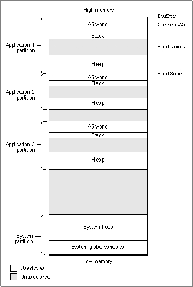
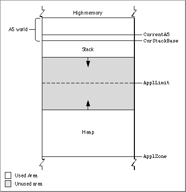
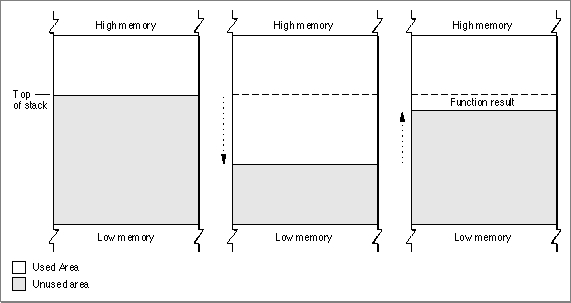
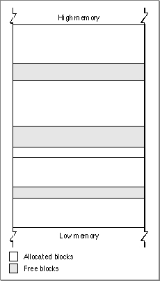
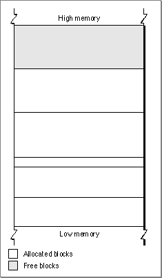
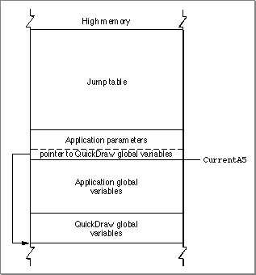
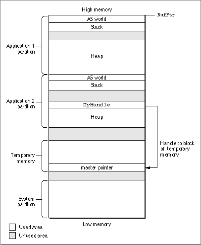

Legacy Document
Important: The information in this document is obsolete and should not be used for new development.
Important: The information in this document is obsolete and should not be used for new development.


About Memory
A Macintosh computer's available RAM is used by the Operating System, applications, and other software components, such as device drivers and system extensions. This section describes both the general organization of memory by the Operating System
and the organization of the memory partition allocated to your application when
it is launched. This section also provides a preliminary description of three related
memory topics:
For more complete information on these three topics, you need to read the remaining chapters in this book.
- temporary memory
- virtual memory
- 24- and 32-bit addressing
Organization of Memory by the Operating System
When the Macintosh Operating System starts up, it divides the available RAM into two broad sections. It reserves for itself a zone or partition of memory known as the system partition. The system partition always begins at the lowest addressable byte of memory (memory address 0) and extends upward. The system partition contains a system heap and a set of global variables, described in the next two sections.All memory outside the system partition is available for allocation to applications or other software components. In system software version 7.0 and later (or when MultiFinder is running in system software versions 5.0 and 6.0), the user can have multiple applications open at once. When an application is launched, the Operating System assigns it a section of memory known as its application partition. In general, an application uses only the memory contained in its own application partition.
Figure 1-1 illustrates the organization of memory when several applications are open at the same time. The system partition occupies the lowest position in memory. Application partitions occupy part of the remaining space. Note that application partitions are loaded into the top part of memory first.
Figure 1-1 Memory organization with several applications open
 In Figure 1-1, three applications are open, each with its own application partition. The application labeled Application 1 is the active application. (The labels on the right side of the figure are system global variables, explained in "The System Global Variables" on page 1-6.)
The System Heap
The main part of the system partition is an area of memory known as the system heap. In general, the system heap is reserved for exclusive use by the Operating System and other system software components, which load into it various items such as system resources, system code segments, and system data structures. All system buffers and queues, for example, are allocated in the system heap.The system heap is also used for code and other resources that do not belong to specific applications, such as code resources that add features to the Operating System or that provide control of special-purpose peripheral equipment. System patches and system extensions (stored as code resources of type
'INIT') are loaded into the system heap during the system startup process. Hardware device drivers (stored as code resources of type'DRVR') are loaded into the system heap when the driver is opened.Most applications don't need to load anything into the system heap. In certain cases, however, you might need to load resources or code segments into the system heap. For example, if you want a vertical retrace task to continue to execute even when your application is in the background, you need to load the task and any data associated with it into the system heap. Otherwise, the Vertical Retrace Manager ignores the task when your application is in the background.
The System Global Variables
The lowest part of memory is occupied by a collection of global variables called system global variables (or low-memory system global variables). The Operating System uses these variables to maintain different kinds of information about the operating environment. For example, theTicksglobal variable contains the number of ticks (sixtieths of a second) that have elapsed since the system was most recently started up. Similar variables contain, for example, the height of the menu bar (MBarHeight) and pointers to the heads of various operating-system queues (DTQueue,FSQHdr,VBLQueue, and so forth). Most low-memory global variables are of this variety: they contain information that is generally useful only to the Operating System or other system software components.Other low-memory global variables contain information about the current application. For example, the
ApplZoneglobal variable contains the address of the first byte
of the active application's partition. TheApplLimitglobal variable contains the
address of the last byte the active application's heap can expand to include. TheCurrentA5global variable contains the address of the boundary between the active application's global variables and its application parameters. Because these global variables contain information about the active application, the Operating System changes the values of these variables whenever a context switch occurs.In general, it is best to avoid reading or writing low-memory system global variables. Most of these variables are undocumented, and the results of changing their values can be unpredictable. Usually, when the value of a low-memory global variable is likely to be useful to applications, the system software provides a routine that you can use to read or write that value. For example, you can get the current value of the
Ticksglobal variable by calling theTickCountfunction.In rare instances, there is no routine that reads or writes the value of a documented global variable. In those cases, you might need to read or write that value directly. See the chapter "Memory Manager" in this book for instructions on reading and writing the values of low-memory global variables from a high-level language.
Organization of Memory in an Application Partition
When your application is launched, the Operating System allocates for it a partition of memory called its application partition. That partition contains required segments of the application's code as well as other data associated with the application. Figure 1-2 illustrates the general organization of an application partition.Figure 1-2 Organization of an application partition
 Your application partition is divided into three major parts:
The heap is located at the low-memory end of your application partition and always expands (when necessary) toward high memory. The A5 world is located at the high-memory end of your application partition and is of fixed size. The stack begins
- the application stack
- the application heap
- the application global variables and A5 world
at the low-memory end of the A5 world and expands downward, toward the top of
the heap.As you can see in Figure 1-2, there is usually an unused area of memory between the stack and the heap. This unused area provides space for the stack to grow without encroaching upon the space assigned to the application heap. In some cases, however, the stack might grow into space reserved for the application heap. If this happens, it is very likely that data in the heap will become corrupted.
The
ApplLimitglobal variable marks the upper limit to which your heap can grow. If you call theMaxApplZoneprocedure at the beginning of your program, the heap immediately extends all the way up to this limit. If you were to use all of the heap's free space, the Memory Manager would not allow you to allocate additional blocks aboveApplLimit. If you do not callMaxApplZone, the heap grows towardApplLimitwhenever the Memory Manager finds that there is not enough memory in the heap to fill a request. However, once the heap grows up toApplLimit, it can grow no further. Thus, whether you maximize your application heap or not, you can use only the space between the bottom of the heap andApplLimit.Unlike the heap, the stack is not bounded by
ApplLimit. If your application uses heavily nested procedures with many local variables or uses extensive recursion, the stack could grow downward beyondApplLimit. Because you do not use Memory Manager routines to allocate memory on the stack, the Memory Manager cannot stop your stack from growing beyondApplLimitand possibly encroaching upon space reserved for the heap. However, a vertical retrace task checks approximately 60 times each second to see if the stack has moved into the heap. If it has, the task, known as the "stack sniffer," generates a system error. This system error alerts you that you have allowed the stack to grow too far, so that you can make adjustments. See "Changing the Size of the Stack" on page 1-39 for instructions on how to change the size of your application stack.
- Note
- To ensure during debugging that your application generates this system error if the stack extends beyond
ApplLimit, you should callMaxApplZoneat the beginning of your program to expand the heap toApplLimit. For more information on expanding the heap, see "Setting Up the Application Heap" beginning on page 1-38.
The Application Stack
The stack is an area of memory in your application partition that can grow or shrink at one end while the other end remains fixed. This means that space on the stack is always allocated and released in LIFO (last-in, first-out) order. The last item allocated is always the first to be released. It also means that the allocated area of the stack is always contiguous. Space is released only at the top of the stack, never in the middle, so there can never be any unallocated "holes" in the stack.By convention, the stack grows from high memory toward low memory addresses. The end of the stack that grows or shrinks is usually referred to as the "top" of the stack, even though it's actually at the lower end of memory occupied by the stack.
Because of its LIFO nature, the stack is especially useful for memory allocation connected with the execution of functions or procedures. When your application calls a routine, space is automatically allocated on the stack for a stack frame. A stack frame contains the routine's parameters, local variables, and return address. Figure 1-3 illustrates how the stack expands and shrinks during a function call. The leftmost diagram shows the stack just before the function is called. The middle diagram shows the stack expanded to hold the stack frame. Once the function is executed, the local variables and function parameters are popped off the stack. If the function is a Pascal function, all that remains is the previous stack with the function result on top.
Figure 1-3 The application stack

- Note
- Dynamic memory allocation on the stack is usually handled automatically if you are using a high-level development language such as Pascal. The compiler generates the code that creates and deletes stack frames for each function or procedure call.
The Application Heap
An application heap is the area of memory in your application partition in which space is dynamically allocated and released on demand. The heap begins at the low-memory end of your application partition and extends upward in memory. The heap contains virtually all items that are not allocated on the stack. For instance, your application heap contains the application's code segments and resources that are currently loaded into memory. The heap also contains other dynamically allocated items such as window records, dialog records, document data, and so forth.You allocate space within your application's heap by making calls to the Memory Manager, either directly (for instance, using the
NewHandlefunction) or indirectly
(for instance, using a routine such asNewWindow, which calls Memory Manager routines). Space in the heap is allocated in blocks, which can be of any size needed
for a particular object.The Memory Manager does all the necessary housekeeping to keep track of blocks in the heap as they are allocated and released. Because these operations can occur in any order, the heap doesn't usually grow and shrink in an orderly way, as the stack does. Instead, after your application has been running for a while, the heap can tend to become fragmented into a patchwork of allocated and free blocks, as shown in Figure 1-4. This fragmentation is known as heap fragmentation.

One result of heap fragmentation is that the Memory Manager might not be able to satisfy your application's request to allocate a block of a particular size. Even though there is enough free space available, the space is broken up into blocks smaller than the requested size. When this happens, the Memory Manager tries to create the needed space by moving allocated blocks together, thus collecting the free space in a single larger block. This operation is known as heap compaction. Figure 1-5 shows the results of compacting the fragmented heap shown in Figure 1-4.
Heap fragmentation is generally not a problem as long as the blocks of memory you allocate are free to move during heap compaction. There are, however, two situations in which a block is not free to move: when it is a nonrelocatable block, and when it is a locked, relocatable block. To minimize heap fragmentation, you should use nonrelocatable blocks sparingly, and you should lock relocatable blocks only when absolutely necessary. See "Relocatable and Nonrelocatable Blocks" starting on page 1-16 for a description of relocatable and nonrelocatable blocks, and "Heap Fragmentation" on page 1-24 for a description of how best to avoid fragmenting your heap.The Application Global Variables and A5 World
Your application's global variables are stored in an area of memory near the top of your application partition known as the application A5 world. The A5 world contains four kinds of data:
Each of these items is of fixed size, although the sizes of the global variables and of the jump table may vary from application to application. Figure 1-6 shows the standard organization of the A5 world.
- application global variables
- application QuickDraw global variables
- application parameters
- the application's jump table
Figure 1-6 Organization of an application's A5 world

The system global variable
- Note
- An application's global variables may appear either above or below the QuickDraw global variables. The relative locations of these two items are determined by your development system's linker. In addition, part of the jump table might appear below the boundary pointed to by
CurrentA5.CurrentA5points to the boundary between the
current application's global variables and its application parameters. For this reason,
the application's global variables are found as negative offsets from the value ofCurrentA5. This boundary is important because the Operating System uses it to access the following information from your application: its global variables, its QuickDraw global variables, the application parameters, and the jump table. This information is known collectively as the A5 world because the Operating System uses the microprocessor's A5 register to point to that boundary.Your application's QuickDraw global variables contain information about its drawing environment. For example, among these variables is a pointer to the current
graphics port.Your application's jump table contains an entry for each of your application's routines that is called by code in another segment. The Segment Manager uses the jump table to determine the address of any externally referenced routines called by a code segment. For more information on jump tables, see the chapter "Segment Manager" in Inside Macintosh: Processes.
The application parameters are 32 bytes of memory located above the application global variables; they're reserved for use by the Operating System. The first long word of those parameters is a pointer to your application's QuickDraw global variables.
Temporary Memory
In the Macintosh multitasking environment, each application is limited to a particular memory partition (whose size is determined by information in the'SIZE'resource of that application). The size of your application's partition places certain limits on the size of your application heap and hence on the sizes of the buffers and other data structures that your application uses. In general, you specify an application partition size that is large enough to hold all the buffers, resources, and other data that your application is likely to need during its execution.If for some reason you need more memory than is currently available in your application heap, you can ask the Operating System to let you use any available memory that is not yet allocated to any other application. This memory, known as temporary memory, is allocated from the available unused RAM; usually, that memory is not contiguous with the memory in your application's zone. Figure 1-7 shows an application using some temporary memory.
Figure 1-7 Using temporary memory allocated from unused RAM
 In Figure 1-7, Application 1 has almost exhausted its application heap. As a result, it has requested and received a large block of temporary memory, extending from the top of Application 2's partition to the top of the allocatable space. Application 1 can use the temporary memory in whatever manner it desires.
Your application should use temporary memory only for occasional short-term purposes that could be accomplished in less space, though perhaps less efficiently. For example, if you want to copy a large file, you might try to allocate a fairly large buffer of temporary memory. If you receive the temporary memory, you can copy data from the source file into the destination file using the large buffer. If, however, the request for temporary memory fails, you can instead use a smaller buffer within your application heap. Although using the smaller buffer might prolong the copying operation, the file is nonetheless copied.
One good reason for using temporary memory only occasionally is that you cannot assume that you will always receive the temporary memory you request. For example, in Figure 1-7, all the available memory is allocated to the two open applications; any further requests by either one for some temporary memory would fail. For complete details on using temporary memory, see the chapter "Memory Manager" in this book.
Virtual Memory
In system software version 7.0 and later, suitably equipped Macintosh computers can take advantage of a feature of the Operating System known as virtual memory, by which the machines have a logical address space that extends beyond the limits of the available physical memory. Because of virtual memory, a user can load more programs and data into the logical address space than would fit in the computer's physical RAM.The Operating System extends the address space by using part of the available secondary storage (that is, part of a hard disk) to hold portions of applications and data that are not currently needed in RAM. When some of those portions of memory are needed, the Operating System swaps out unneeded parts of applications or data to the secondary storage, thereby making room for the parts that are needed.
It is important to realize that virtual memory operates transparently to most applications. Unless your application has time-critical needs that might be adversely affected by the operation of virtual memory or installs routines that execute at interrupt time, you do not need to know whether virtual memory is operating. For complete details on virtual memory, see the chapter "Virtual Memory Manager" later in this book.
Addressing Modes
On suitably equipped Macintosh computers, the Operating System supports 32-bit addressing, that is, the ability to use 32 bits to determine memory addresses. Earlier versions of system software use 24-bit addressing, where the upper 8 bits of memory addresses are ignored or used as flag bits. In a 24-bit addressing scheme, the logical address space has a size of 16 MB. Because 8 MB of this total are reserved for I/O space, ROM, and slot space, the largest contiguous program address space is 8 MB. When 32-bit addressing is in operation, the maximum program address space is 1 GB.The ability to operate with 32-bit addressing is available only on certain Macintosh models, namely those with systems that contain a 32-bit Memory Manager. (For compatibility reasons, these systems also contain a 24-bit Memory Manager.) In order for your application to work when the machine is using 32-bit addressing, it must be 32-bit clean, that is, able to run in an environment where all 32 bits of a memory address are significant. Fortunately, writing applications that are 32-bit clean is relatively easy if you follow the guidelines in Inside Macintosh. In general, applications are not 32-bit clean because they manipulate flag bits in master pointers directly (for instance, to mark the associated memory blocks as locked or purgeable) instead of using Memory Manager routines to achieve the desired result. See "Relocatable and Nonrelocatable Blocks" on page 1-16 for a description of master pointers.
Occasionally, an application running when 24-bit addressing is enabled might need to modify memory addresses to make them compatible with the 24-bit Memory Manager. In addition, drivers or other code might need to use 32-bit addresses, even when running in 24-bit mode. See the descriptions of the routines
- WARNING
- You should never make assumptions about the contents of Memory Manager data structures, including master pointers and zone headers. These structures have changed in the past and they are likely to change again in the future.
StripAddressandTranslate24to32in the chapter "Memory Management Utilities" for details.